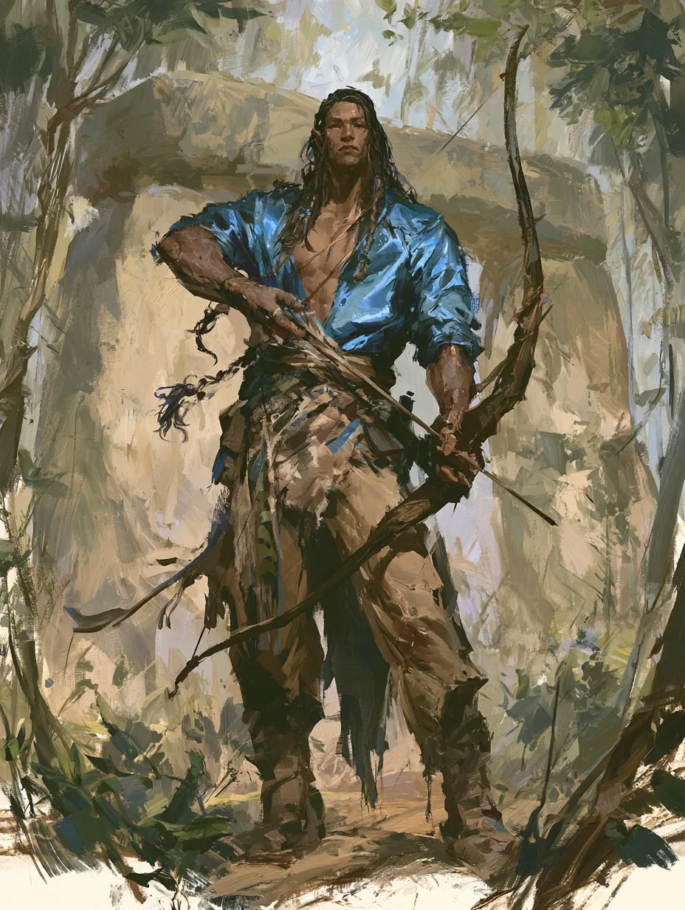

At a glance
| Class | Fighter 4 — Arcane Archer |
| Species | Goliath — Giant Ancestry (Fire Giant) |
| Background | Noble |
| AC / HP | 16 / 31 · Hit Dice 4d10 |
| Speed | 30 ft. · Initiative +4 · Passive Perception 9 |
| Languages | Common, Elvish, Giant |
| Spellcasting | Intelligence · save DC 13 · attack +5 (Prestidigitation, from Arcane Archer Lore) |
Trained to martial and simple weapons and to every grade of armour including shields, with weapon mastery in longbow, scimitar, shortsword and shortbow. The longbow sits at +8 to hit for 1d8+6: the Archery fighting style in the attack bonus, the Bracers of Archery in the damage. Two Arcane Shot options are written up — Beguiling Shot and Enfeebling Shot — three uses between rests. Fire's Burn adds 1d10 fire damage twice per long rest, and Second Wind now heals three times a day.
The title is formal and has to be held by someone; there were no sisters, so it fell to him.
He carries a disguise kit, a dragonchess set, fine clothes, perfume and 200 gp — and a potion of healing.
The record
Session 1, Arcana Unleashed. Caught one of the animated blades out of the air bare-handed in the plaza at Immilmar and threw it into another one. In the clearing at the standing stones, planted the bow against one foot at point-blank range and put a 29-damage Enfeebling Shot into the Thayan wizard.
Session 2. Reached 4th level — the Ability Score Improvement went into Dexterity, and he attuned to the Bracers of Archery.
Source · Character sheet supplied by the player (2024 rules, two pages), advanced to 4th level after session two